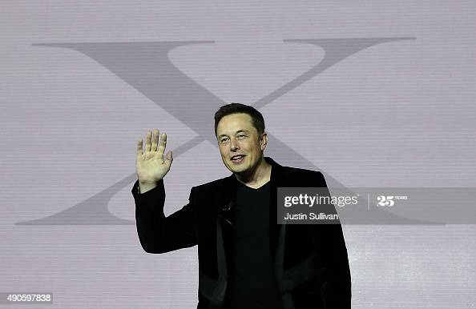

Elon Must
The entrepreneur who achieved the impossible.

He is the founder, CEO, CTO and chief designer of SpaceX; early investor, CEO and product architect of Tesla, Inc. Founder of The Boring Company; co-founder of Neuralink; and co-founder and initial co-chairman of OpenAI.
Here's a time line of Elon Must life:
- 2002 Musk founded Space Exploration Technologies Corp
- 2004Musk led the Series A round of investment in February, joining Tesla's board of directors as its chairman.
- 2015Musk announced the creation of OpenAI
- 2016 Musk co-founded Neuralink, a neurotechnology start-up company to integrate the human brain with artificial intelligence
- 2017 while stuck in traffic, Musk tweeted "[I] am going to build a tunnel boring machine and just start digging ..." The company was named 'The Boring Company' (TBC)